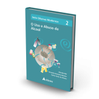
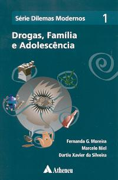
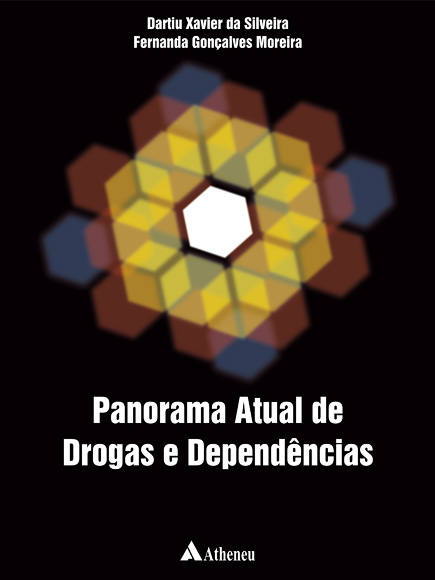
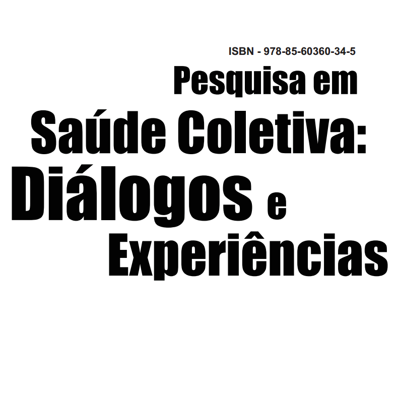
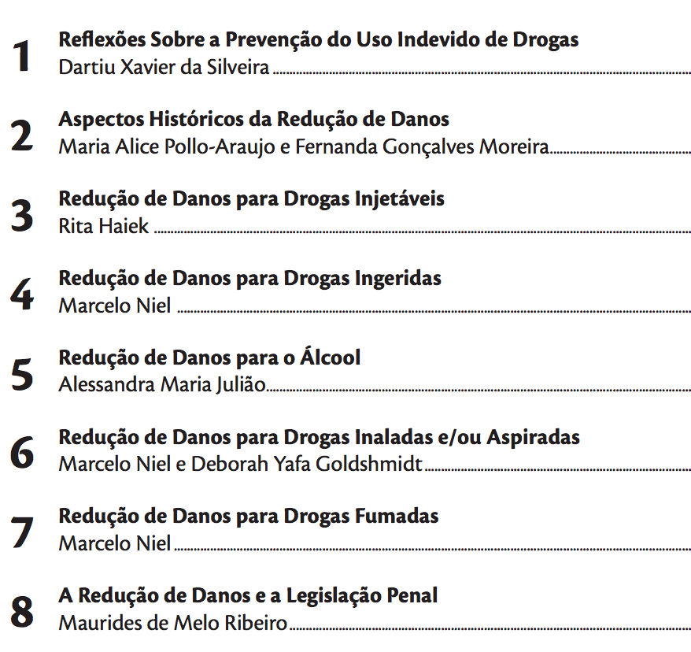
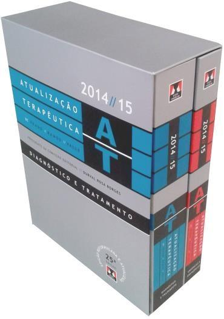

|
MOREIRA, F. G. . Ferida narcísica e tutores de resiliência: uma leitura analítica da saga de Harry Potter. 1. ed. São Paulo: Kindle, 2015. v. 1. 120p |
|  |
NIEL, M. (Org.) ; MOREIRA, F. G. (Org.) ; SILVEIRA, D. X. (Org.) . O Uso e Abuso de Álcool. 1. ed. São Paulo: Atheneu, 2013. v. 2. 89p |
|  |
MOREIRA, F. G. (Org.) ; NIEL, M. (Org.) ; SILVEIRA, D. X. (Org.) . Dilemas modernos: drogas, família e adolescência. 1. ed. São Paulo: Atheneu, 2009. v. 1. 112p |
|  |
SILVEIRA, D. X. (Org.) ; MOREIRA, F. G. (Org.). Panorama Atual de Drogas e Dependências. 1. ed. São Paulo: Atheneu, 2006. v. 1. |
|  |
ANDREOLI, SERGIO B. ; MOREIRA, F. G. ; Quintana, M I S ; Martin, D. .Saúde coletiva como campo de produção de conhecimento na promoção de saúde mental. In: Amelia Conh; Denise Martin; Rosa Maria Ferreiro Pinto.. (Org.). Pesquisa em saúde coletiva: diálogos e experiências.. 1ed.Santos: Editora Universitária Leopoldianum, 2012, v. 1, p. 87-110. |
|
MOREIRA, F. G. ; MOREIRA, P. C. S. . Drogas de Abuso e Coração. In: Elias Knobel; Ana Lúcia Martins da Silva; Paola Bruno de Araujo Andreoli. (Org.). Coração..é emoção: a influência das emoções sobre o coração.. 1ed.São Paulo: Atheneu, 2010, v. , p. 209-219. |
|  |
POLLO-ARAUJO, M. A. ; MOREIRA, F. G. . Aspectos Históricos da Redução de Danos. In: Niel, Marcelo; da Silveira, Dartiu Xavier. (Org.). Drogas e Redução de Danos: uma cartilha para profissionais de saúde. São Paulo: Imprensa Oficial - Ministério da Saúde, 2008, v. , p. 11-19. |
|
MOREIRA, F. G. . Drogas: começando a conversa. Conversando sobre Saúde com Crianças. 1ed.Rio de Janeiro: Instituto Ciência Hoje, 2007, v. 14. |
|  |
SILVEIRA, D. X. ; MOREIRA, F. G. ; JULIAO, A. M. . Transtornos Relacionados ao Uso de Drogas. In: Felício Cintra do Prado; Jairo de Almeida Ramos; José Ribeiro de Valle. (Org.). Atualização Terapêutica. 22ed.São Paulo: Artes Médicas, 2005, v. 1, p. 1660-1663. |
 |
MOREIRA, F. G. ; SILVEIRA, D. X. .Maconha, haxixe: cannabis sativa. In: Antônio Carlos Egypto; Helena Albertani; Isabel Costa; Sylvia Cavasin; Vera Simonetti. (Org.). Tá na Roda: uma conversa sobre drogas. 1ed.São Paulo: Fundação Roberto Marinho; Secretaria de Estado de Educação; Governo de Estado de São Paulo, 2004, v. , p. 143-150. |
|
MOREIRA, F. G. ; SILVEIRA, D. X. .Aspectos legais do consumo de maconha. In: Antônio Carlos Egypto; Helena Albertani; Isabel Costa; Sylvia Cavasin; Vera Simonetti. (Org.). Tá na Roda: uma conversa sobre drogas. 1ed.São Paulo: Fundação roberto Marinho; Secretaria de estado da Educação; Governo do estado de São Paulo, 2004, v. , p. 151-153. |